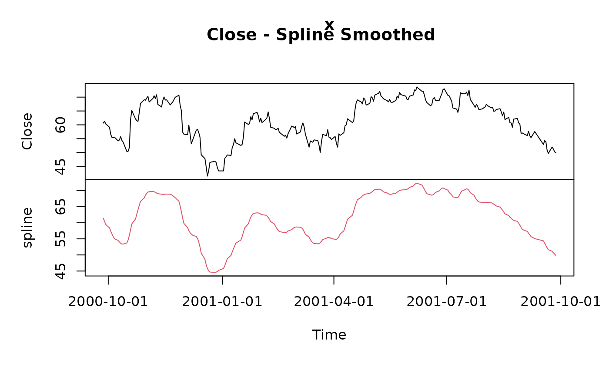
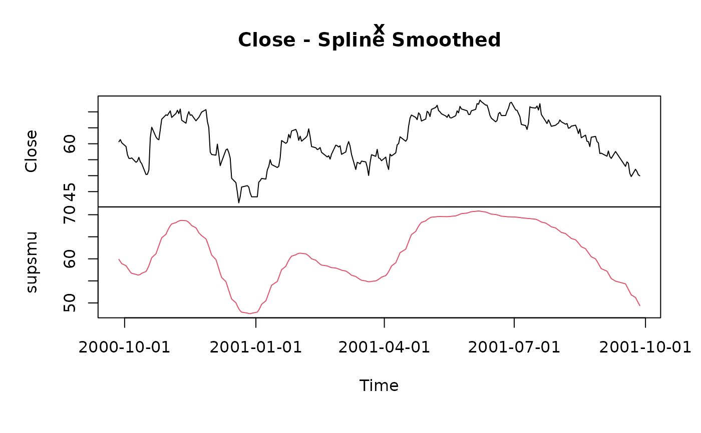
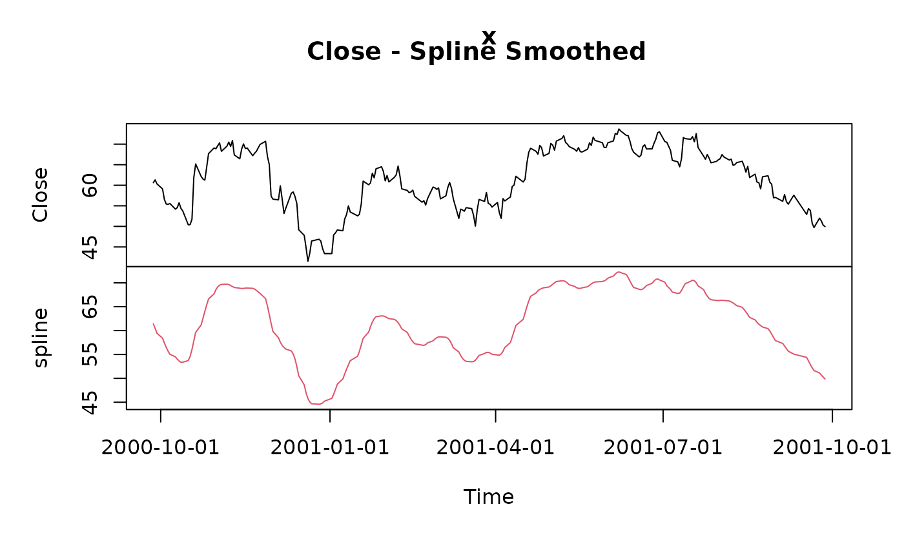
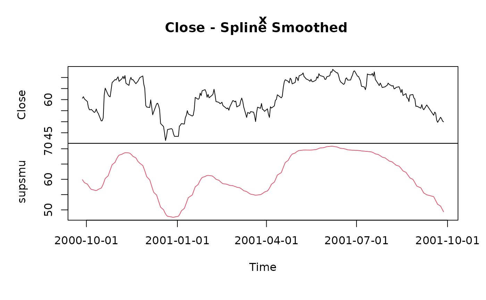

Smooths time series objects
statistics-smoothLowess.RdSmooths a "timeSeries" object.
Usage
smoothLowess(x, f = 0.5, ...)
smoothSpline(x, spar = NULL, ...)
smoothSupsmu(x, bass = 5, ...)Arguments
- x
an univariate
"timeSeries"object.- f
-
the lowess smoother span. This gives the proportion of points in the plot which influence the smooth at each value. Larger values give more smoothness.
- spar
-
smoothing parameter, typically (but not necessarily) in (0,1]. By default
NULL, i.e. the value will be automatically selected. - bass
-
controls the smoothness of the fitted curve. Values of up to 10 indicate increasing smoothness.
- ...
-
optional arguments to be passed to the underlying smoothers.
Details
The functions smoothLowess, smoothSpline,
smoothSupsmu allow to smooth timeSerie object. The are
interfaces to the function lowess, supmsu. and
smooth.spline in R's stats package.
The ... arguments allow to pass optional arguments to the
underlying stats functions and tailor the smoothing process.
We refer to the manual pages of these functions for a proper setting
of these options.
Value
a bivariate "timeSeries" object, the first column holds the
original time series data, the second the smoothed series.
Examples
## Use Close from MSFT's Price Series -
head(MSFT)
#> GMT
#> Open High Low Close Volume
#> 2000-09-27 63.4375 63.5625 59.8125 60.6250 53077800
#> 2000-09-28 60.8125 61.8750 60.6250 61.3125 26180200
#> 2000-09-29 61.0000 61.3125 58.6250 60.3125 37026800
#> 2000-10-02 60.5000 60.8125 58.2500 59.1250 29281200
#> 2000-10-03 59.5625 59.8125 56.5000 56.5625 42687000
#> 2000-10-04 56.3750 56.5625 54.5000 55.4375 68226700
MSFT.CLOSE <- MSFT[, "Close"]
head(MSFT.CLOSE)
#> GMT
#> Close
#> 2000-09-27 60.6250
#> 2000-09-28 61.3125
#> 2000-09-29 60.3125
#> 2000-10-02 59.1250
#> 2000-10-03 56.5625
#> 2000-10-04 55.4375
## Plot Original and Smoothed Series by Lowess -
MSFT.LOWESS <- smoothLowess(MSFT.CLOSE, f = 0.1)
head(MSFT.LOWESS)
#> GMT
#> Close lowess
#> 2000-09-27 60.6250 58.41715
#> 2000-09-28 61.3125 58.16470
#> 2000-09-29 60.3125 57.91224
#> 2000-10-02 59.1250 57.73580
#> 2000-10-03 56.5625 57.55935
#> 2000-10-04 55.4375 57.45904
plot(MSFT.LOWESS)
title(main = "Close - Lowess Smoothed")
 ## Plot Original and Smoothed Series by Splines -
MSFT.SPLINE <- smoothSpline(MSFT.CLOSE, spar = 0.4)
head(MSFT.SPLINE)
#> GMT
#> Close spline
#> 2000-09-27 60.6250 61.41202
#> 2000-09-28 61.3125 60.44324
#> 2000-09-29 60.3125 59.44354
#> 2000-10-02 59.1250 58.40815
#> 2000-10-03 56.5625 57.40205
#> 2000-10-04 55.4375 56.49498
plot(MSFT.SPLINE)
title(main = "Close - Spline Smoothed")

## Plot Original and Smoothed Series by Supsmu -
MSFT.SUPSMU <- smoothSupsmu(MSFT.CLOSE)
head(MSFT.SUPSMU)
#> GMT
#> Close supsmu
#> 2000-09-27 60.6250 59.85858
#> 2000-09-28 61.3125 59.38475
#> 2000-09-29 60.3125 58.91093
#> 2000-10-02 59.1250 58.43710
#> 2000-10-03 56.5625 57.96327
#> 2000-10-04 55.4375 57.48944
plot(MSFT.SUPSMU)
title(main = "Close - Spline Smoothed")

## Plot Original and Smoothed Series by Splines -
MSFT.SPLINE <- smoothSpline(MSFT.CLOSE, spar = 0.4)
head(MSFT.SPLINE)
#> GMT
#> Close spline
#> 2000-09-27 60.6250 61.41202
#> 2000-09-28 61.3125 60.44324
#> 2000-09-29 60.3125 59.44354
#> 2000-10-02 59.1250 58.40815
#> 2000-10-03 56.5625 57.40205
#> 2000-10-04 55.4375 56.49498
plot(MSFT.SPLINE)
title(main = "Close - Spline Smoothed")

## Plot Original and Smoothed Series by Supsmu -
MSFT.SUPSMU <- smoothSupsmu(MSFT.CLOSE)
head(MSFT.SUPSMU)
#> GMT
#> Close supsmu
#> 2000-09-27 60.6250 59.85858
#> 2000-09-28 61.3125 59.38475
#> 2000-09-29 60.3125 58.91093
#> 2000-10-02 59.1250 58.43710
#> 2000-10-03 56.5625 57.96327
#> 2000-10-04 55.4375 57.48944
plot(MSFT.SUPSMU)
title(main = "Close - Spline Smoothed")
